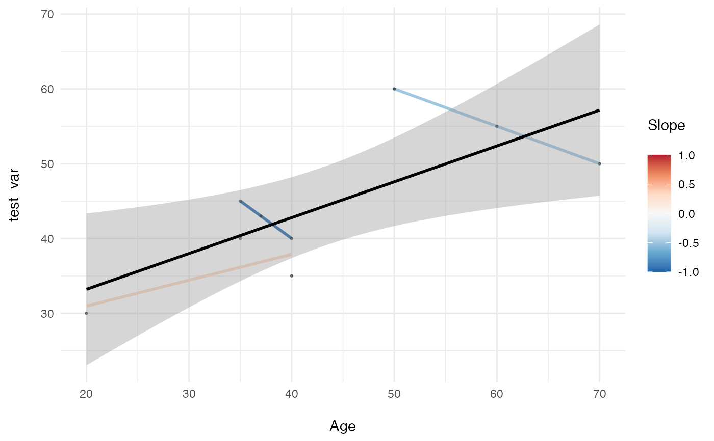

plot_longitudinal_slopes_by_age.Rdplot_longitudinal_slopes_by_age
plot_longitudinal_slopes_by_age(
data_long,
variable,
age_var = "age",
sub_var = "sub",
wave_var = "wave"
)Data in person-period format
Variable to plot
Name of age variable
Name of subject ID variable
Name of wave variable
plot with y-axis of variable and x-axis of age. lines and colors are estimated slopes within sub_vars (i.e., slopes represent change in variable over time)
df_fake <- data.frame(sub = c(1, 1, 1, 2, 2, 2, 3, 3, 3),
wave = c(1, 2, 3, 1, 2, 3, 1, 2, 3),
age = c(50, 60, 70, 20, 35, 40, 35, 37, 40),
test_var = c(60, 55, 50, 30, 40, 35, 45, 43, 40))
plot_longitudinal_slopes_by_age(df_fake, 'test_var')
#> Warning: There were 2 warnings in `mutate()`.
#> The first warning was:
#> ℹ In argument: `estimates = map(...)`.
#> ℹ In group 1: `eval(as.name(sub_var)) = 1`.
#> Caused by warning in `summary.lm()`:
#> ! essentially perfect fit: summary may be unreliable
#> ℹ Run `dplyr::last_dplyr_warnings()` to see the 1 remaining warning.
#> `geom_smooth()` using formula = 'y ~ x'
